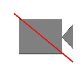

Demonstrate camera and video content
Syntax:
vcapture-demo [-device=deviceid]
[-display=displayid]
[-dmode=deinterlace_mode]
[-flip]
[-format=bufferformat]
[-frame-size=widthxheight]
[-fs]
[-mirror]
[-pos=coordinates]
[-rot=rotation]
[-scale=scale_multiplier]
[-source=index]
-std=video_standard
[-zorder=order]
Options:
- -device=deviceid
- An integer that specifies the index of the device to use for capturing video.
- -display=displayid
- A string that represents a numeric value or a display type. As a numeric value, it's
used to represent the display ID. As a string value, it represents the display type
using one of these values, which are case-sensitive:
- internal
- An internal connection type to the display.
- composite
- A composite connection type to the display.
- svideo
- An S-Video connection type to the display.
- YPbPr
- The YPbPr signal of the component connection.
- rgb
- The RGB signal of the component connection.
- rgbhv
- The RBGHV signal of the component connection.
- dvi
- A DVI connection type to the display.
- hdmi
- An HDMI connection type to the display.
- other
- A connection type to the display which is one other than internal, composite,
S-Video, component, DVI, HDMI, or DisplayPort.
- -dmode=deinterlace_mode
-
A string that specifies the deinterlace mode to use for the captured video. The deinterlace mode that you
specify must be supported by your capture hardware. This mode can be specified by using one of the
following values, which are case-sensitive:
- adaptive
-
Use motion adapative deinterlacing mode. This value is used if the -dmode= option
isn't set.
Note:
On supported platforms (e.g., Texas Instruments Jacinto 6), setting this value
causes deinterlacing to be performed by using the on-board motion-adaptive hardware deinterlacer.
- bob
- Use BOB deinterlacing mode.
- bob2
- Use alternate BOB deinterlace mode.
- none
-
Don't deinterlace the video. Set the -dmode= option to this value if
deinterlacing isn't needed (e.g., on a NXP i.MX6 SABRE Smart target).
- weave
- Use WEAVE deinterlace mode.
- weave2
- Use alternate WEAVE deinterlace mode.
- -flip
-
Display the output flipped vertically.
- -format=bufferformat
- A string that specifies the buffer format. If this option isn't set, the default
format is yvyu. The format can be specified using one of the following
values, which are case-sensitive:
- rgb565
- rgb888
- rgba8888
- rgbx8888
- uyvy (default)
- yuy2
- yvyu
- v422
You must select a format that's supported by your display hardware.
- -frame-size=widthxheight
- The user-defined frame size as specified by width and height in
pixels.
The Video capture library considers this frame size only when you specify the video standard
(-std option) as user-defined.
- -fs
- Stretch the output so that it's fullscreen, ignoring the aspect ratio, scale, and position.
- -mirror
-
Display the output mirrored horizontally.
- -pos=coordinates
- A pair of integers that specifies the position of the video window on the display. The
X and Y coordinates are delimited using a comma
(,). For example, 10,10.
- -rot=rotation
-
The rotation, in degrees (e.g., 0, 90, 180, or 270), of the capture window. The aspect ratio is maintained.
- -scale=scale_multiplier
-
The multiplier for the window size. Typical multipler values range between 0.05 to 10.
- -source=index
- An integer that specifies the index of the device's video capture unit.
- -std=video_standard
-
A mandatory string that specifies the video standard. Video standards are case sensitive and
valid entries are listed below:
| Video standard |
Default frame size |
Default deinterlace mode |
| ntsc |
720x480 |
CAPTURE_DEINTERLACE_MOTION_ADAPTIVE_MODE |
| pal |
720x576 |
CAPTURE_DEINTERLACE_MOTION_ADAPTIVE_MODE |
| secam |
720x576 |
CAPTURE_DEINTERLACE_MOTION_ADAPTIVE_MODE |
| vga |
640x480 |
CAPTURE_DEINTERLACE_NONE_MODE |
| 720p |
1280x720 |
CAPTURE_DEINTERLACE_NONE_MODE |
| 1080i |
1920x1080 |
CAPTURE_DEINTERLACE_NONE_MODE |
| 1080p |
1920x1080 |
CAPTURE_DEINTERLACE_NONE_MODE |
| 1440p |
2560x1440 |
CAPTURE_DEINTERLACE_NONE_MODE |
| user-defined |
As specified by -frame-size option |
CAPTURE_DEINTERLACE_NONE_MODE |
- -zorder=order
- An integer that specifies the z-order of the video rendering window.
Note:
On the NXP i.MX6 SABRE Smart target, de-interlacing isn't required with camera input.
You must use -dmode=none
(e.g., vcapture-demo -std=vga -format=uyvy -device=0 -source=0 -dmode=none).
Description:
The vcapture-demo utility demonstrates how to use Screen to display video that is captured using the Video capture API.
To run vcapture-demo on your target:
- Ensure that screen is running.
- Run vcapture-demo from a shell.
Note:
Note that not all options, or values for each option, are valid for your specific target hardware.
vcapture-demo will time out after 100ms and display a no video icon (

) if there is no input.
Example:
Not all of the following examples may apply to your target hardware.
To start video capture with the VGA video standard, from source 0, and an output format of
uyvy:
vcapture-demo -std=vga -source=0 -format=uyvy -dmode=none
To start video capture with NTSC video standard, mirrored horizontally, and scaled by a factor of 1.2:
vcapture-demo -std=ntsc -mirror -scale=1.2 -dmode=weave2